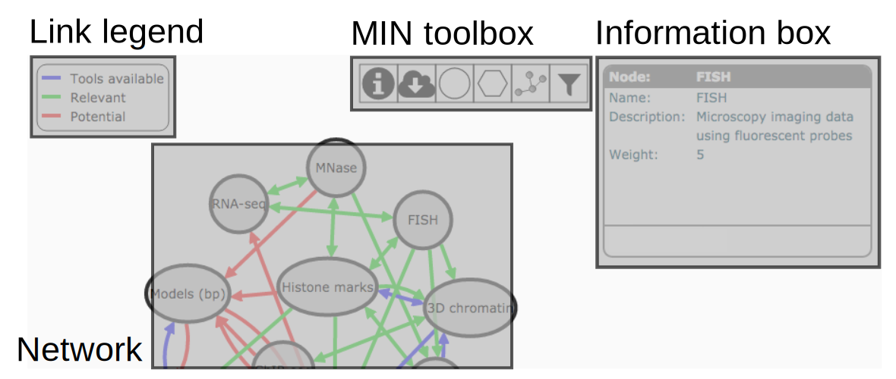

Welcome to the MuG Information Network (MIN), a tool to visualise the flow of information within the Multiscale Complex Genomics project. This is a short help about how to use the MIN (please scroll down); click on this box to close it.
The MIN shows nodes (grey ellipses) and links (colored arrows connecting nodes). By clicking on nodes and links, further information will appear in the Information box on the right hand side of the page. Drag a node to move it around in the page: other nodes will react to keep the network compact; shift-click nodes to fix/unfix their position in the page.
Each node in the MIN is a type of data that is relevant for research in Multiscale Complex Genomics. Nodes are characterised by two fields:
Each link in the MIN is a scientific connection between nodes, which is a fairly loose concept that can represent a variety of things. Links are primarily characterised by their source and target nodes, as well as other properties:
Links are categorised according to the information flow they convey. Links have one arrow (inform) when there is a clear direction of information flow, for example for conversion tools, or when one data type informs another. Links have two arrows (connect) when the two data types have equivalent roles, and are integrated for example in a combined view or to answer a specific question.
Links are also categorised according to how established the connection they describe is: blue when there are tools available in the MuG VRE, green when the connection has been shown to be relevant in the literature and finally red when the connection is of potential interest for Multiscale Complex Genomics research.
At the centre of the page there is a a collection of tools available to perform various actions:
In the lower part of the Information box, a toolbox is available to modify the information in the network. The following actions are available (the final two are only available while editing):
When editing a Link, the properties Tools, References and Links are lists of entries, each composed of two fields:
Please note that any changes you make will be lost if you refresh the page.